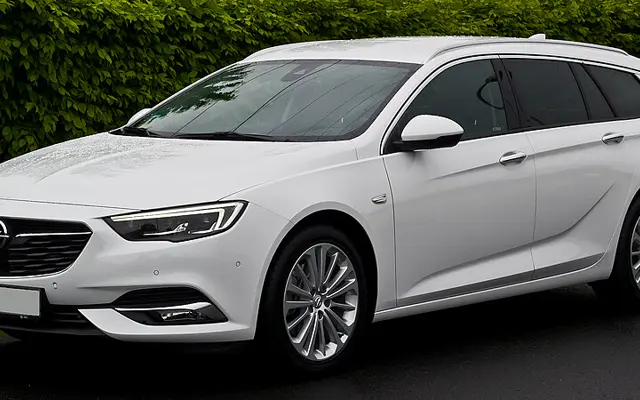

Par Motor › Precios por modelo › Opel Insignia
Precio de segunda mano · noviembre de 2026¿Cuánto vale un Opel Insignia de segunda mano?

Precio justo estimado de un Opel Insignia usado en España, año por año, con los kilómetros normales para su edad y en buen estado: de 6.100 € a 21.500 €. Para tasar el tuyo con sus kilómetros reales y su estado, usa el tasador gratis.
Precios del Opel Insignia por año
Insignia A (2008–2017)
Precio de nuevo: 1.6 Turbo 180 CV, 27.000 € · 2.0 CDTi 130 CV, 27.000 € · 1.8 140 CV, 24.000 €
| Año | Km normales | 1.6 Turbo 180 CV · Gasolina | 2.0 CDTi 130 CV · Diésel | 1.8 140 CV · Gasolina |
|---|---|---|---|---|
| 2017 | 100.000 km | 12.200 € | 13.500 € | 10.900 € |
| 2016 | 100.000 km | 11.800 € | 12.600 € | 10.500 € |
| 2015 | 100.000 km | 11.400 € | 11.600 € | 10.100 € |
| 2014 | 100.000 km | 11.000 € | 10.700 € | 9.700 € |
| 2013 | 100.000 km | 10.200 € | 9.900 € | 9.100 € |
| 2012 | 100.000 km | 9.500 € | 9.200 € | 8.400 € |
| 2011 | 100.000 km | 8.700 € | 8.500 € | 7.800 € |
| 2010 | 100.000 km | 8.100 € | 7.800 € | 7.200 € |
| 2009 | 100.000 km | 7.500 € | 7.200 € | 6.600 € |
| 2008 | 100.000 km | 6.900 € | 6.700 € | 6.100 € |
Insignia B (2017–2022)
Precio de nuevo: 1.5 Turbo 140 CV, 30.000 € · 1.6 CDTi 136 CV, 31.000 € · 1.5 Turbo 165 CV, 32.000 €
| Año | Km normales | 1.5 Turbo 140 CV · Gasolina | 1.6 CDTi 136 CV · Diésel | 1.5 Turbo 165 CV · Gasolina |
|---|---|---|---|---|
| 2022 | 65.000 km | 20.200 € | 18.400 € | 21.500 € |
| 2021 | 80.000 km | 17.900 € | 16.800 € | 19.100 € |
| 2020 | 95.000 km | 15.500 € | 16.600 € | 16.500 € |
| 2019 | 100.000 km | 14.500 € | 16.300 € | 15.500 € |
| 2018 | 100.000 km | 14.100 € | 15.900 € | 15.000 € |
| 2017 | 100.000 km | 13.600 € | 15.500 € | 14.500 € |
Kilómetros normales: 15.000 al año en gasolina, híbridos y eléctricos, y 20.000 en diésel, con un máximo de 100.000 km (por encima no tasamos: el precio depende demasiado del historial de cada coche). Cifras redondeadas a 100 €.
Preguntas frecuentes
¿Cuánto vale un Opel Insignia de segunda mano?
Según el año, la versión y los kilómetros, un Opel Insignia usado vale hoy de 6.100 € a 21.500 € en España. El más barato de nuestra tabla es un 1.8 de 2008 (6.100 €) y el más caro un 1.5 Turbo de 2022 (21.500 €). Son precios justos estimados entre particulares y profesionales, con los kilómetros normales para su edad y en buen estado.
¿Cuánto valor pierde un Opel Insignia al año?
Con unos años encima, un Opel Insignia pierde alrededor de un 8 % de su valor cada año (calculado sobre el 1.5 Turbo de la generación Insignia B). Los primeros años la caída es mayor y a partir de los 70.000 km se acelera.
¿Qué motorizaciones tiene el Opel Insignia?
En nuestra base de datos hay versiones gasolina y diésel, en 2 generaciónes: Insignia A y Insignia B.
¿Cómo sé si me piden demasiado por un Opel Insignia?
Abre el tasador de Par Motor, elige el Opel Insignia, el año y los kilómetros reales, y escribe lo que te piden. Te diremos si está por debajo del precio justo (chollo) o por encima (caro). Es gratis y no pide registro ni matrícula.
Otros Opel
Compara su coste real
El precio de compra es solo una parte. Mira cuánto te costaría al mes con combustible, seguro, neumáticos, mantenimiento y lo que pierde de valor.
Abrir el comparador →